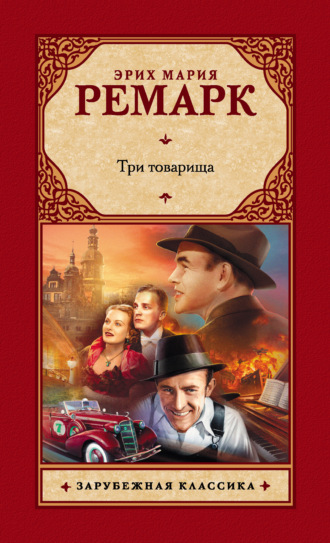

Немецкий писатель XX века, представитель «потерянного поколения».
Одна из самых прекрасных и почитаемых миллионами его фанатов традиций — это публикация сборников, неизменно состоящих из четырех повестей. Так, мы все хорошо знакомы с книгами "Четыре сезона", "Четыре после полуночи", "Тьма, — и больше ничего".